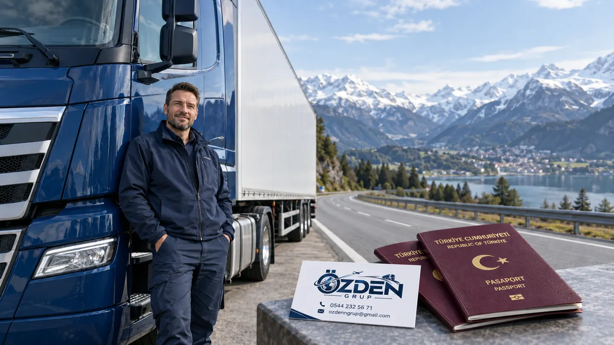

Kimler için uygundur?
Polonya’ya yapılan yük veya yolcu taşımacılığı seferlerinde profesyonel şoför kategorisinin doğru seçilmesine yardımcı oluyoruz. Başvurunun Türkiye merkezli taşımacılık göreviyle uyumu incelenir.

Polonya başvurusunda öne çıkanlar
Polonya temsilciliğinin kategori duyurusunda profesyonel şoförler Schengen başvuruları arasında yer alır. Polonya’daki bir şirkette çalışmaya yönelik D vizesi aynı başvuru değildir.
İşvereninizin kayıtlı olduğu ülke ve seferin niteliği, başvuru türünü etkiler. Yerel işe giriş planını uluslararası taşıma dosyası gibi sunmamak gerekir.
Dosya hazırlığı için belge grupları
Aşağıdaki gruplar danışmanlık görüşmesinde hazırlık yapmanıza yardımcı olur. Kişisel statünüze ait zorunlu liste, bu sayfanın altındaki resmi kaynaklardan kontrol edilir; ek evrak istenebilir.
- İşveren görevlendirmesi ve şirket kayıtları
- SGK, sürücü ve mesleki belgeler
- Taşıma sözleşmesi, teslimat bilgisi ve sefer planı
- Geçmiş Schengen vizeleri ve taşımacılık kayıtları
Belgeleri tarih, kişi ve şirket bilgileri açısından karşılaştırmak; okunaklı kopyaları ve istenen asılları ayrı tutmak teslim sırasında dosyanızın izlenmesini kolaylaştırır. Gereken tercüme veya tasdik koşulları başvuru kanalına göre teyit edilir.
Başvuru hazırlığını nasıl ilerletiyoruz?
Seferi tanımlayın
Görevinizi, işvereninizi, yükleme ve teslimat adreslerini, araç ve sürücü bağlantısını bir sefer özeti içinde toplayın. Seferdeki her ülkeyi ve öngörülen günleri belirtin. Birden fazla şoför varsa kişisel dosyalar ile ortak şirket evraklarını ayrı düzenlemek takibi kolaylaştırır.
Belgeler arasındaki uyumu kontrol edin
Görev yazısı, taşıma evrakı ve davet üzerindeki firma adları, tarihler ve adresleri karşılaştırın. Eski sefer kaydını yeni görevin kanıtı gibi kullanmayın. Başvurunun mesleki amacını anlaşılır bir sıra içinde açıklayın.
Başvuru ve seyahati birlikte takip edin
Resmi başvuru kanalını kullanın, teslim veya biyometri gerekliliğini teyit edin. Karar sonrasında vizedeki giriş sayısını, geçerlilik tarihini ve kalış gününü güzergâhla karşılaştırın. Vize ile araç/taşıma izinlerinin ayrı belgeler olduğunu gözetin.
Başvuru kanalı, ücret ve süre
Polonya dış temsilcilikleri kısa süreli kategorileri VFS Global üzerinden duyurur. Türk vatandaşlarının çalışma amaçlı ulusal başvurularında e-Konsulat kanalı ayrıca kontrol edilir.
Harç, başvuru merkezi bedeli ve varsa ek hizmetler ayrı kalemlerdir. Güncel tarife seçilen resmi başvuru yolunda kontrol edilir. Randevu bekleme süresi ile dosyanın karar süresi aynı değildir; bunları seyahat tarihinden geriye doğru ayrı planlıyoruz.
Özden Grup, başvuru amacını ve dosyanın düzenini değerlendirmenize, resmi kategori ile randevu/teslim adımlarını anlamanıza yardımcı olur. Randevu kontenjanı ve vize kararı üzerinde yetkimiz bulunmaz.
WhatsApp’tan Bilgi Al ↗Sık sorulan sorular
Polonya’da şoför olarak iş buldum; aynı kategori mi?
Türkiye firmasının uluslararası seferi ile Polonya işvereninde istihdam ayrı süreçlerdir. İkinci durumda çalışma izni ve ulusal vize şartları değerlendirilir.
Özden Grup ile görüşmek için ne paylaşmalıyım?
Ülke, seyahat amacı, planlanan tarihler, pasaport türü ve mesleki durumunuzla başlayabilirsiniz. İlk görüşmede başvuru yolunu netleştirip kişisel dosyanıza uygun belge hazırlığını planlıyoruz.
Randevu almak vize onayı demek midir?
Randevu veya dosya teslimi başvurunun bir aşamasıdır. Vizeyi ilgili ülkenin yetkili makamı değerlendirir. Başvuru merkezi veya danışmanlık şirketi vize kararı vermez.
İlgili bilgiler
Resmi kaynaklar
Kontrol tarihi: . Başvurunuza ait nihai koşullar ve belge listesi resmi kanalda teyit edilir.